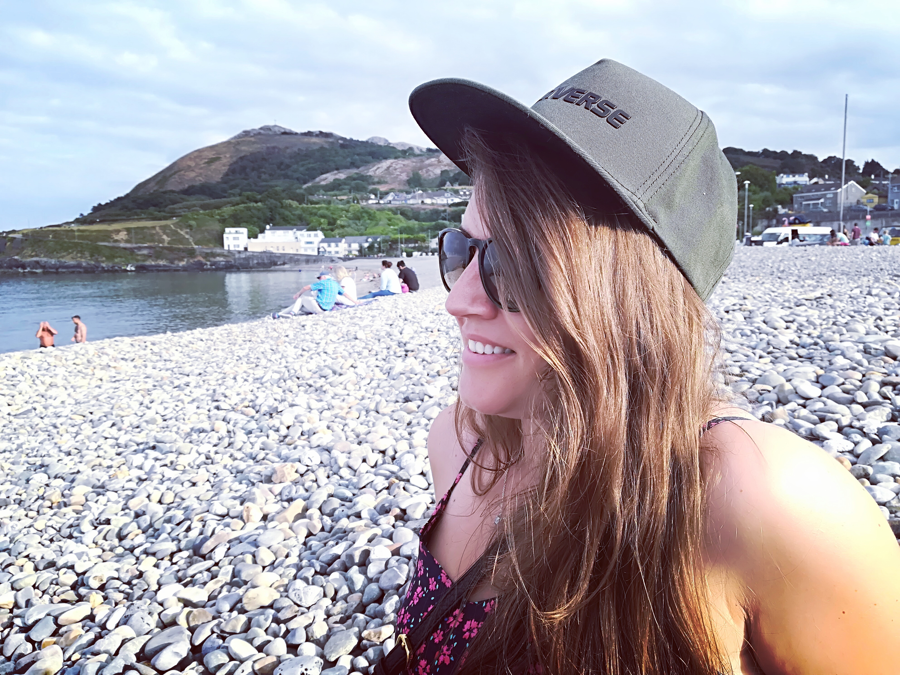

This website brings Natasha's professional and life experience of
what people face on day-to-day and at work and help those with
difficult to strive and become the extrovert version of themselves
and with this not to miss any great opportunity that might come into
their own life. It was idealized at first as some sort of
self-motivation for Natasha's own life, but it consequently reached
and touched many others in similar position and now that is the way
Nathasa wants to interact with those who share the same interst.